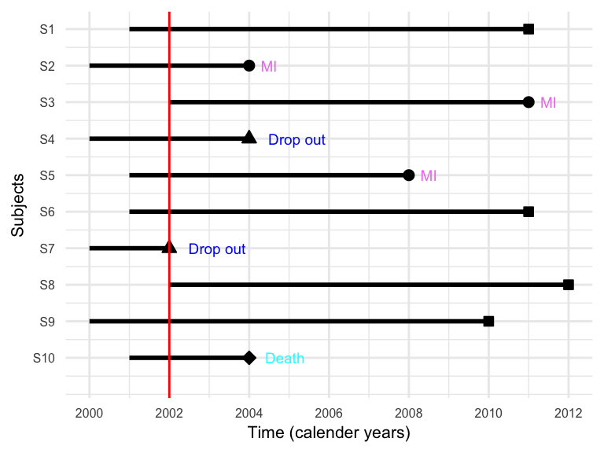
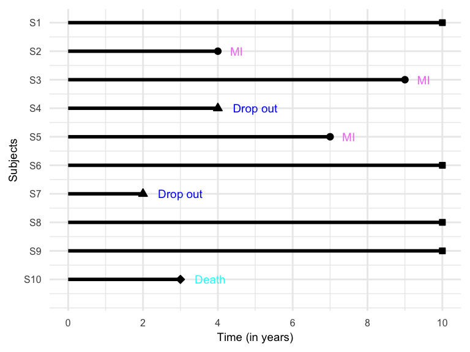
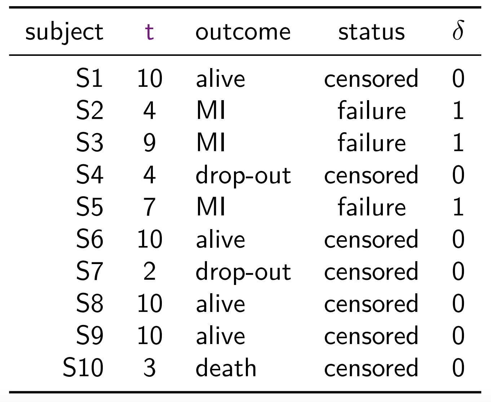

Chapter 2
(AST305) Lifetime Data Analysis I
2 Observed Schemes, Censoring, and Likelihood
2.1 Introduction
Preliminary Discussion of Likelihood
Suppose that the probability distribution of potentially observable data in a study specified up to a parameter vector \(\boldsymbol{\theta}\)
The likelihood function for \(\boldsymbol{\theta}\) is a function of \(\boldsymbol{\theta}\) that is proportional to the probability density/mass of the observed data, viewed as a function \(\boldsymbol{\theta}\) \[ L(\boldsymbol{\theta})\propto Pr(\text{Data};\ \boldsymbol{\theta}) \qquad \qquad \text{(2.1.1)} \]
-
Interpretation of notation:
- Data \(\rightarrow\) observed data
- \(Pr\;\rightarrow\) probability density or mass function from which the data are assumed to arise
- \(L(\boldsymbol{\theta}; \text{Data})\;\rightarrow\) is a more formal notation for likelihood function
Asymptotic Results and Large Sample Methods
-
Assume that the data consist of a random sample \(y_1,\ldots,y_n\) from a distribution with density function \(f(y;,\boldsymbol{\theta})\), where
- \(\boldsymbol{\theta}=(\theta_1,\ldots,\theta_k)'\in\Omega\) is a vector of unknown parameters
- For simplicity, each \(y_i\) is considered scalar, though it may be vector-valued in general
The likelihood function is \[ L(\boldsymbol{\theta}) = \prod_{i=1}^n f(y_i; \boldsymbol{\theta}) \]
If \(y_i\)’s are independent but not identically distributed then \(f(y_i; \boldsymbol{\theta})\) is replaced by \(f_i(y_i;\boldsymbol{\theta})\) in the definition of likelihood function
-
Let \(\hat{\boldsymbol{\theta}}\) be a value in \(\Omega\) at which \(L(\boldsymbol{\theta})\) is maximized
\(\hat{\boldsymbol{\theta}}\) is called the maximum likelihood estimator (MLE).
In most simple settings \(\hat{\boldsymbol{\theta}}\) exists and is unique
It is often convenient to work with the log-likelihood function, which is also maximized at \(\hat{\boldsymbol{\theta}}\) \[ \ell(\boldsymbol{\theta}) = \log L(\boldsymbol{\theta})=\sum_i\log f(y_i;\boldsymbol{\theta}) \]
-
The MLE \(\hat{\boldsymbol{\theta}}\) can be obtained by solving the system of score equations \[ U_j(\boldsymbol{\theta}) =\mathbf{0} \;\;\;(j=1, \ldots, k) \]
\(U_j(\boldsymbol{\theta})=\frac{\partial \ell(\boldsymbol{\theta})}{\partial\theta_j}\,\rightarrow\) \(j\)th score or score function
\(\mathbf{U}(\boldsymbol{\theta}) = [U_1(\boldsymbol{\theta}), \ldots, U_k(\boldsymbol{\theta})]'\,\rightarrow\) score vector of order \(k\times 1\)
-
The score vector \(\mathbf{U}(\boldsymbol{\theta})\) is asymptotically (\(k\)-variate) normal with
- mean \(\mathbf{0}\)
- variance–covariance matrix \(\mathcal{I}(\boldsymbol{\theta})\), the Fisher information matrix
The \((j, j')th\) entry of \(\mathcal{I}(\boldsymbol{\theta})\) is \[ \mathcal{I}_{jj'}(\boldsymbol{\theta}) =E\Bigg( \frac{-\partial^2\ell(\boldsymbol{\theta})}{\partial\boldsymbol{\theta}_j\,\partial\boldsymbol{\theta}_{j'}}\Bigg)\;\;\;\;j,\,j' = 1, \ldots, k \]
-
Terminology:
\(\mathcal{I}(\boldsymbol{\theta})\,\rightarrow\) Fisher or expected information matrix
\(I(\hat{\boldsymbol{\theta}})\,\rightarrow\) observed information matrix
-
Under mild regularity conditions
\(\hat{\boldsymbol{\theta}}\) is a consistent estimator of \(\boldsymbol{\theta}\)
\(I(\hat{\boldsymbol{\theta}})/n\) is a consistent estimator of \(\mathcal{I}(\boldsymbol{\theta})/n\)
Optimization Methods for Maximum Likelihood
The MLE corresponds to the maximizer of \(\ell(\boldsymbol{\theta})\): \[ \hat{\boldsymbol{\theta}} = \arg\max_{\theta\in \Omega} \ell(\boldsymbol{\theta}) \]
There are different numerical approaches for optimizing the multiparameter log-likelihood function \(\ell(\boldsymbol{\theta})\) for \(\boldsymbol{\theta}\in\Omega\)
Many likelihood functions have a unique maximum at \(\hat{\boldsymbol{\theta}}\), which is a stationary point satisfying \(\partial\ell(\boldsymbol{\theta})/\partial\boldsymbol{\theta}=\mathbf{0}\)
Numerical approaches involve a starting point \(\boldsymbol{\theta}_0\) and an iterative procedure designed to give a sequence of points \(\boldsymbol{\theta}_1, \boldsymbol{\theta}_2, \ldots\) converging to \(\hat{\boldsymbol{\theta}}\) (i.e. when \(\boldsymbol{\theta}_j\simeq \boldsymbol{\theta}_{j-1}\))
-
Three types of optimization methods are available in statistical software
Methods that do not use derivatives (e.g., simplex algorithm, such as Nelder-Mead method)
Methods that use only first derivative \(U(\boldsymbol{\theta})=\partial\ell(\boldsymbol{\theta})/\partial\boldsymbol{\theta}\) (e.g. steepest ascent, quasi-Newton, and conjugate gradient method)
-
Methods that use both first derivative \(U(\boldsymbol{\theta})\) and second derivative \(H(\boldsymbol{\theta})=\partial^2\ell(\boldsymbol{\theta})/\partial\boldsymbol{\theta}\,\partial{\boldsymbol{\theta}'}\) (e.g. Newton-Raphson method)
- \(H(\boldsymbol{\theta})\) is known as Hessian matrix and observed information matrix \(I(\hat{\boldsymbol{\theta}}) = -H(\hat{\boldsymbol{\theta}})\)
-
Newton-Raphson method is commonly used for optimizing \(\ell(\boldsymbol{\theta})\), which is based on the iteration scheme for the \(j\)th step \((j=1, 2, \ldots)\) as \[ {\color{purple}\boldsymbol{\theta}_{j} = \boldsymbol{\theta}_{j-1} - \big[H(\boldsymbol{\theta}_{j-1})\big]^{-1}\,U(\boldsymbol{\theta}_{j-1})} \]
- \(\boldsymbol{\theta}_{j-1}\,\rightarrow\) value of \(\boldsymbol{\theta}\) at the \((j-1)th\) iteration
- Using Taylor series expansion, expanding \(U(\boldsymbol{\theta})\) at \(\boldsymbol{\theta}_j\) \[
\begin{aligned}
U(\boldsymbol{\theta}) & = U(\boldsymbol{\theta}_j) + H(\boldsymbol{\theta}_j) (\boldsymbol{\theta} - \boldsymbol{\theta}_j)
\end{aligned}
\]
- Then \[ U(\boldsymbol{\theta}) = \mathbf{0} \;\Rightarrow\;\boldsymbol{\theta} = \boldsymbol{\theta}_j - \big[H(\boldsymbol{\theta}_j)\big]^{-1}\,U(\boldsymbol{\theta}_j) \]
In many situations, finding the MLE may be challenging, e.g. it may be on the boundary of \(\Omega\)
Likelihood function may also possess multiple stationary points, and optimization techniques are designed to obtain local maxima, so it may not converge to global maxima
It is important to understand the shape of \(\ell(\boldsymbol{\theta})\) before applying an optimization method
Example 2.1.1
Suppose lifetimes \(t_1,\ldots,t_n\) are observed from a population with density \(f(t)\) and distribution \(F(t)\).
Then the likelihood is (from Eq. 2.1.1) \[ Pr(\text{Data}) = \prod_{i=1}^n f(t_i) \qquad \qquad \text{(2.1.2)} \]
Parametric Approach of Inference
Assume that \(f(t)\) has a specific parametric form \(f(t;\, \boldsymbol{\theta})\)
Likelihood function \[ L(\boldsymbol{\theta}) = \prod_{i=1}^n f(t_i;\, \boldsymbol{\theta}) \]
By maximizing \(L(\boldsymbol{\theta})\) or \(\ell(\boldsymbol{\theta})\), we obtain \(\hat{\boldsymbol{\theta}}\) and consequently an estimate of the cumulative distribution function is \(F(t;\hat{\boldsymbol{\theta}})\).
For example, if \(T\sim \text{Exp}(\theta)\) then \(\hat{\theta} = \bar{t}\) and \(F(t;\,\hat{\theta})= 1 -\exp(-t/\hat{\theta})\)
Nonparametric Approach of Inference
Suppose \(F(t)\) is discrete with jump probabilities \(f(t)=F(t)-F(t-1)\) at \(t=1,2,\ldots\).
-
The model parameters are \(\mathbf{f}=(f(1), f(2), \ldots)\) and the likelihood function is \[ L = \prod_{i=1}^nf(t_i) \]
- Restrictions: \(f(t)\geq 0 \;\;\forall t\;\;\text{and}\;\;\sum_{t} f(t)=1\)
-
The MLEs obtained by maximizing the corresponding likelihood function are: \[ \hat{f}(t) = \frac{1}{n}\sum_{i=1}^n I(t_i=t) \]
- \(I(A)\) is an indicator function \[ I(A) = \begin{cases} 1 & \text{if $A$ is true} \\ 0& \text{otherwise}\end{cases} \]
-
Estimate of the cumulative distribution function \(F(t)\): \[ \begin{aligned} \hat{F}(t) &= \sum_{t_i\leq t} \hat{f}(t_i) \\[.25em] & = \frac{1}{n}\sum_{i=1}^nI(t_i\leq t) \end{aligned} \]
- \(\hat{F}(t)\,\rightarrow\) empirical distribution function
Likelihood for a Truncated Sample
-
Suppose that \(t_1, \ldots, t_n\) are not from an unrestricted random sample of individuals, but a random sample of those with lifetimes one year or less
- No information is available for those whose lifetimes are greater than one year
The likelihood function for this truncated sample is given by \[ \prod_{i=1}^n Pr(t_i\,\vert\, T_i\leq 1) = \prod_{i=1}^n \frac{f(t_i)}{F(1)} \] rather than (2.1.2)
Likelihood Based Inferences
Score Test
Score vector \(\boldsymbol{U(\theta})\) asymptotically follows \(k\)-variate normal distribution with mean vector \(\mathbf{0}\) and variance-covariance matrix \(\mathcal{I}(\boldsymbol{\theta})\)
Under the null hypothesis \(H_0: \boldsymbol{\theta} = \boldsymbol{\theta}_0\), the test statistic \[ W(\boldsymbol{\theta}_0) = U(\boldsymbol{\theta}_0)'\,\mathcal{I}(\boldsymbol{\theta}_0)^{-1}\,U(\boldsymbol{\theta}_0) \] asymptotically follows \(\chi^2_{(k)}\) distribution.
The statistic \(W(\boldsymbol{\theta}_0)\) can also be used to obtain confidence intervals for \(\boldsymbol{\theta}\)
Wald Test
The MLE \(\hat{\boldsymbol{\theta}}\) follows a \(k\)-dimensional normal distribution with mean \(\boldsymbol{\theta}\) and variance-covariance matrix \(\mathcal{I}(\boldsymbol{\theta})^{-1}\)
In other words, \(\sqrt{n}(\hat{\boldsymbol{\theta}} - \boldsymbol{\theta})\) follows a \(k\)-dimensional normal distribution with mean \(\mathbf{0}\) and variance-covariance matrix \(n\,\mathcal{I}(\boldsymbol{\theta})^{-1}\)
Under \(H_0: \boldsymbol{\theta}=\boldsymbol{\theta}_0\), \[ (\hat{\boldsymbol{\theta}} - \boldsymbol{\theta}_0)' \mathcal{I}(\boldsymbol{\theta}_0)(\hat{\boldsymbol{\theta}} - \boldsymbol{\theta}_0) \] asymptotically follows \(\chi^2_{(k)}\).
Since \(I(\hat{\boldsymbol{\theta}})/n\) is a consistent estimator of \(\mathcal{I}(\boldsymbol{\theta}_0)\), we can replace \(\mathcal{I}(\boldsymbol{\theta}_0)\) by \(\mathbf{I}(\hat{\boldsymbol{\theta}})\) in the test statistic.
Likelihood Ratio Test (LRT)
- Under \(H_0: \boldsymbol{\theta}=\boldsymbol{\theta}_0\), \[ \begin{aligned} \Lambda(\boldsymbol{\theta}_0) &= -2\log\Bigg[\frac{L(\boldsymbol{\theta}_0)}{L(\hat{\boldsymbol{\theta}})} \Bigg]\\[.25em] & =2\ell(\hat{\boldsymbol{\theta}}) - 2\ell(\boldsymbol{\theta}_0) \end{aligned} \] asymptotically follows \(\chi^2_{(k)}\)
2.2 Right Censoring and Maximum Likelihood
For right censored data, only the lower bounds on lifetime are available for some individuals
Right censored lifetimes are observed for various reasons, such as termination of the study, lost-to-follow-up, etc.
Contribution to the likelihood function would be different for right censored and complete lifetimes
Construction of the likelihood function could differ for different types of censoring, such as left censoring, interval censoring, etc.
-
Let the random variables \(T_1, \ldots, T_n\) represent the lifetimes of \(n\) individuals
- Let \(C_1, \ldots, C_n\) be the corresponding right censoring times (random variables)
-
For the \(i\)th individual, we observe \(\{(t_i, \delta_i), i = 1, \ldots, n\}\)
\(t_i\) is a sample realization of \(X_i = \min\{T_i, C_i\}\)
\(\delta_i=I(T_i\leq C_i)\) is known as censoring or status indicator, i.e. \[ \delta_i = \begin{cases} 1 & \text{if $t_i$ is observed failure time} \\ 0 & \text{if $t_i$ is observed censoring time} \end{cases} \]
-
There are three types of right censoring mechanism
Type I censoring (fixed end time)
Independent random censoring
Type II censoring (stop after \(r\) failures)
Type I Censoring
In Type I censoring, potential censoring time \(C_i\) is assumed to be fixed for each individual
-
Type I censoring often arises when a study is conducted over a specified period of time
- For example, if termination of life test on electrical insulation specimens after 180 minutes, then \(C_i=180\;\;\forall\,i\)
- Likelihood function for the observed Type I censored sample \(\{(t_i, \delta_i), i=1, \ldots, n\}\) \[ L =\prod_{i=1}^n Pr(X_i=t_i, \delta_i) \]
. . .
\[ L = \prod_{i=1}^n \big[ Pr(X_i=t_i, \delta_i=1)\big]^{\delta_i} \, \big[Pr(X_i=t_i, \delta_i=0)\big]^{1-\delta_i} \]
Likelihood function for the observed Type I censored sample \(\{(t_i, \delta_i), i=1, \ldots, n\}\) \[ L = \prod_{i=1}^n \big[ Pr(X_i=t_i, \delta_i=1)\big]^{\delta_i} \, \big[Pr(X_i=t_i, \delta_i=0)\big]^{1-\delta_i} \]
We can show that
\[ \begin{aligned} &Pr(X_i=t_i, \delta_i=1)\\ &= Pr(\min\{T_i, C_i\}=t_i, \delta_i=1) \\[.25em] & = Pr(T_i = t_i) \\[.25em] & =f(t_i) \end{aligned} \]
\[ \begin{aligned} &Pr(X_i=t_i, \delta_i=0) \\ &= Pr(\min\{T_i, C_i\}=t_i, \delta_i=0) \\[.25em] & = Pr(T_i > C_i, C_i = t_i) \\[.25em] & = Pr(T_i > t_i) \\[.25em] & = S(t_i+) \end{aligned} \]
-
Likelihood function for the observed Type I censored sample \(\{(t_i, \delta_i), i=1, \ldots, n\}\) \[ \begin{aligned} L &=\prod_{i=1}^n Pr(X_i=t_i, \delta_i)\\ & = \prod_{i=1}^n \big[Pr(X_i=t_i, \delta_i=1)\big]^{\delta_i}\,\big[Pr(X_i=t_i, \delta_i=0)\big]^{1-\delta_i}\\ %& = \prod_{i=1}^n \big[Pr(T_i=t_i)\big]^{\delta_i}\,\big[Pr(T_i > C_i, C_i = t_i)\big]^{1-\delta_i}\\ %& = \prod_{i=1}^n \big[Pr(T_i=t_i)\big]^{\delta_i}\,\big[Pr(T_i > t_i) \big]^{1-\delta_i}\\ & = {\color{purple} \prod_{i=1}^n \big[f(t_i)\big]^{\delta_i} \, \big[S(t_i+)\big]^{1-\delta_i} } \end{aligned} \]
- If \(S(t)\) is continuous at \(t_i\), then \(S(t_i+) = S(t_i)\)
Example 2.2.1
Suppose that lifetimes \(T_i\) are independent and follow an exponential distribution with the pdf \(f(t)=\lambda\,e^{-\lambda t}\).
Let \(\{(t_i, \delta_i), i=1, \ldots, n\}\) be a random sample (right censored, Type I) from the exponential distribution.
Obtain the expression of the likelihood function for the given sample.
Given \[ f(t) = \lambda\,e^{-\lambda t} \;\;\Rightarrow\;\; S(t) = e^{-\lambda t} \]
-
The likelihood function \[ \begin{aligned} L &= \prod_{i=1}^n \Big[ f(t_i)\Big]^{\delta_i}\Big[ S(t_i)\Big]^{1-\delta_i}\\[.25em] & = \prod_{i=1}^n \Big[\lambda e^{-\lambda t_i}\Big]^{\delta_i}\Big[e^{-\lambda t_i}\Big]^{1-\delta_i}\\[.25em] & = \Big[\lambda^{\sum_{i=1}^n \delta_i}\Big] \;\Big[e^{-\lambda\sum_{i=1}^nt_i}\Big]\\[.25em] & = \Big[\lambda^r\Big] \;\Big[e^{-\lambda\sum_{i=1}^nt_i}\Big] \end{aligned} \]
- \(r = {\sum_{i=1}^n \delta_i}\)
Independent Random Censoring
Censoring time \(C\) is assumed to be continuous random variable with survivor function \(G(t)\) and density function \(g(t)\)
Lifetime \(T\) is also continuous random variable with survivor function \(S(t)\) and density function \(f(t)\)
-
Assumptions:
\(T\) and \(C\) are independent
\(G(t)\) does not depend on any of the parameters of \(S(t)\)
- Likelihood function for the observed independent random censored sample \(\{(t_i, \delta_i), i=1, \ldots, n\}\) \[ \begin{aligned} L &=\prod_{i=1}^n Pr(X_i=t_i, \delta_i)\\ & = \prod_{i=1}^n \big[Pr(X_i=t_i, \delta_i=1)\big]^{\delta_i}\,\big[Pr(X_i=t_i, \delta_i=0)\big]^{1-\delta_i} \end{aligned} \]
- We can show \[ \begin{aligned} Pr(X_i=t_i, \delta_i=1) & = Pr(T_i < C_i, T_i = t_i) \\[.25em] & = Pr(T_i < C_i\,\vert\, T_i = t_i) \,Pr(T_i = t_i) \\[.25em] & = Pr(C_i > t_i) \,Pr(T_i = t_i) \\[.25em] & = G(t_i+)\,f(t_i) \end{aligned} \]
- We can show \[ \begin{aligned} Pr(X_i=t_i, \delta_i=0) & = Pr(T_i > C_i, C_i = t_i) \\[.25em] & = Pr(T_i > C_i\,\vert\, C_i = t_i) \,Pr(C_i = t_i) \\[.25em] & = Pr(T_i > t_i) \,Pr(C_i = t_i) \\[.25em] & = S(t_i+)\,g(t_i) \end{aligned} \]
Likelihood function for the observed independent random censored sample \(\{(t_i, \delta_i), i=1, \ldots, n\}\) \[ \begin{aligned} L &=\prod_{i=1}^n Pr(X_i=t_i, \delta_i)\\ & = \prod_{i=1}^n \big[Pr(X_i=t_i, \delta_i=1)\big]^{\delta_i}\,\big[Pr(X_i=t_i, \delta_i=0)\big]^{1-\delta_i}\\[.25em] & = \prod_{i=1}^n \big[G(t_i+)\,f(t_i)\big]^{\delta_i}\,\big[S(t_i+)\,g(t_i)\big]^{1-\delta_i}\\[.25em] \end{aligned} \]
Since \(G(t)\) and \(g(t)\) don’t involve any parameters of \(f(t)\) \[\begin{align*} {\color{purple} L = \prod_{i=1}^n \big[f(t_i)\big]^{\delta_i}\,\big[S(t_i+)\big]^{1-\delta_i}} \end{align*}\]
Type II censoring
-
In Type II censoring, lifetest starts with \(n\) units and it stops when \(r\) number of failures are observed
So \(r\) smallest lifetimes \(t_{(1)} \leq \cdots \leq t_{(r)}\) in a random sample of \(n\) are observed
\(r\,\rightarrow\) a specified integer that lies between 1 and \(n\)
The remaining \((n-r)\) units are considered as censored at the time \(t_{(r)}\)
For Type II censoring, the likelihood function is the probability of observing \(r\) smallest lifetimes \(t_{(1)} \leq \cdots \leq t_{(r)}\) out of \(n\) lifetimes \[\begin{align*} L = \binom{n}{r} \Big\{\prod_{i=1}^r f(t_{(i)})\Big\}\, \Big[S(t_{(r)})\Big]^{n-r} \end{align*}\]
This expression is similar to the expression obtained for Type I and random independent censoring with all the censoring times equal to \(t_{(r)}\)
Example 2.2.2
Let \(t_{(i)}, \ldots, t_{(r)}\) be a Type II random sample of \(n\) lifetimes \(T_1, \ldots, T_n\), where \(T_i\) follows an exponential distribution with rate \(\lambda\)
-
The likelihood function \[\begin{align*} L &= \binom{n}{r} \Big\{\prod_{i=1}^r f(t_{(i)})\Big\}\, \Big[S(t_{(r)})\Big]^{n-r} \\[.25em] & = \binom{n}{r}\Big\{\prod_{i=1}^r \lambda e^{-\lambda t_{(i)}} \Big\} \Big[e^{-\lambda t_{(r)}}\Big]^{n-r} \\[.25em] & = \binom{n}{r} \lambda^r e^{-\lambda W} \end{align*}\]
- \(W = \sum_{i=1}^r t_{(i)} + (n-r)t_{(r)}\)
A general formulation of right censoring
The censoring process is often not any of the types discussed so far, and may be sufficiently complicated to make modeling it impossible.
For example, a decision to terminate a life test or clinical trial at time \(t\), or to withdraw certain individuals, might be based on failure information prior to time \(t\),
Fortunately it can be shown that under rather general conditions the observed likelihood is of the form (2.2.3) and can be used in the normal way to make inferences about the lifetime distribution under study. \[ L = { \color{purple} \prod_{i=1}^n \big[f(t_i)\big]^{\delta_i} \, \big[S(t_i+)\big]^{1-\delta_i} } \]
Read Section 2.2.2 of the textbook for details.
A Hypothetical Study
A hypothetical study
A small prospective study was run, where 10 participants were recruited to follow
The event of interest was the development of myocardial infarction (MI, or heart attack) over a period of 10 years (follow-up period)
Participants are recruited into the study over a period of two years and were then followed for up to 10 years
Study in calender years
{S2, S3, S5} \(\rightarrow\) experienced MI
{S4, S7} \(\rightarrow\) dropped out
{S10} \(\rightarrow\) died from other causes
{S1, S6, S8, S9} \(\rightarrow\) completed 10-year follow-up without MI
Study in years


Times for the subjects who did not experience MI by the end of 10-year follow-up or dropped-out or died from causes not related to MI are known as censored times
Time-to-MI (time to the event of interest) are known as failure time (or survival time)
For survival data, the pair (time, status), \((t, \delta)\), is considered as the response
A sample of survival data can also be expressed as following, where \(^+\) sign indicates censored observations \[ 10^+, 4, 9, 4^+, 7, 10^+, 2^+, 10^+, 10^+, 3^+ \]
2.3 Other Type of Incomplete Data
Incomplete data in survival analysis is not limited to right censoring.
Depending on how and when information is missing, several other types of incomplete data can occur.
Understanding them is essential because the likelihood formulation and estimation procedures may differ.
Left Censoring
An observation is left censored if the event of interest has already occurred before the subject enters the study, but the exact event time is unknown.
In this case, we only know that the lifetime \(T \leq t_i\), where \(t_i\) is the observed entry time.
-
Contribution to likelihood:
\[ Pr(T \leq t_i) = F(t_i) \]
where \(F(t)\) is the cumulative distribution function.
Example: In a study of HIV infection, if a subject is already infected when first tested, the actual time of infection is left censored.
Interval Censoring
Definition: The event of interest is only known to occur between two observation times.
That is, for subject \(i\), we know \(L_i < T_i \leq R_i\) (with \(0 < L_i < R_i < \infty\)).
-
Contribution to likelihood:
\[ Pr(L_i < T_i \leq R_i) = S(L_i) - S(R_i) \]
Example: In medical screening studies, cancer may be detected at the second screening visit, but the exact time of onset is somewhere between the first and second visits.
Truncation
Truncation occurs when individuals are included in the sample only if their lifetimes satisfy certain conditions. Unlike censoring, truncated individuals are never observed at all.
-
Types:
- Left truncation (delayed entry): Only individuals with \(T \geq t_0\) are observed.
- Right truncation: Only individuals with \(T \leq t_0\) are observed.
Contribution to likelihood must be conditional on the truncation event.
Example:
- Left truncation: In a cohort study of heart disease, only people who survive long enough to be enrolled at age 50 are included.
- Right truncation: In a study of human longevity, only individuals who died before the study ended are observed.
Summary
| Type | Observed information | Likelihood contribution \(L_i\) |
|---|---|---|
| Direct observation | \(T = t_i\) | \(f(t_i)\) |
| Right censoring | \(T > t_i\) | \(S(t_i)\) |
| Left censoring | \(T < t_i\) | \(F(t_i)\) |
| Interval censoring | \(l_i < T \le r_i\) | \(F(r_i) - F(l_i)\) |
| Left truncation | \(T = t_i \;\vert\; T > u\) | \(\dfrac{f(t_i)}{S(u)}\) |
| Right truncation | \(T = t_i \;\vert\; T < v\) | \(\dfrac{f(t_i)}{F(v)}\) |
Acknowledgements
This lecture is adapted from materials created by Mahbub Latif